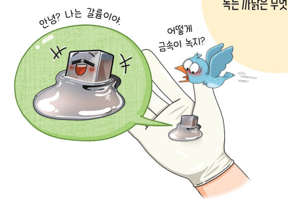
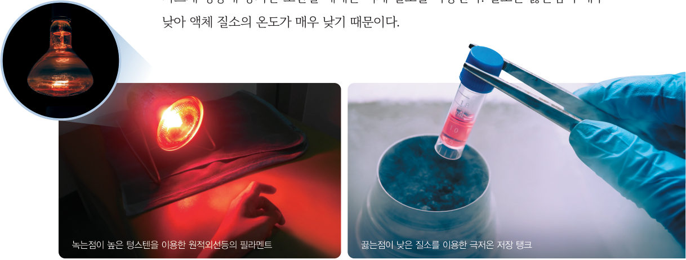
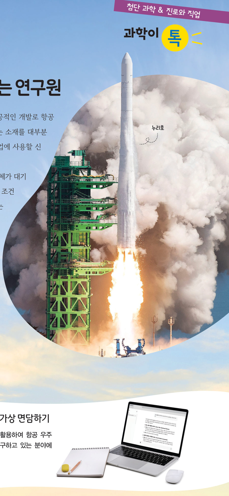

물질의 상태가
변하는 온도
“안녕? 나는 갈륨이야.” “어떻게 금속이 녹지?” 고체 갈륨은 손바닥 위에서 녹는다. 가상 온도 센서로 팔미트산의 양을 바꾸어 가열 곡선을 그리고, 녹는점과 끓는점이 왜 물질의 특성인지 알아보자.
물질의 상태가 변하는 온도는 물질의 양에 따라 어떠할까?
물질을 가열하면 온도가 서서히 높아지다가 상태가 변하고, 물질의 상태가 변하는 동안에는 온도가 일정하게 유지된다. 다음 탐구로 물질의 양이 다를 때 물질의 상태가 변하는 온도는 어떠한지 알아보자.
- ●팔미트산 5 g과 10 g 중 하나를 선택하여 시험관에 넣는다.
- 디지털 탐구 도구 활용 온도 센서를 시험관 속 팔미트산에 넣어 스탠드와 집게로 고정하고 스마트 기기를 연결한다.
- 관찰 온도 측정 앱을 실행한 뒤 팔미트산이 모두 녹을 때까지 물중탕으로 가열한다.
- 가열 곡선에서 온도가 일정한 구간의 온도를 확인하여 표에 기록한다.
- 각 모둠의 그래프를 공유 플랫폼에 올리고 비교한다.
●팔미트산: 흰색 고체 물질로 화장품, 플라스틱, 합성 세제 등의 원료로 사용된다.

💡 오개념 바로잡기 · 물질의 어는점은 녹는점보다 낮을까?
액체 물질을 냉각하면 액체가 응고하는 동안 온도가 일정하게 유지되는데, 이때의 온도를 ‘어는점’이라고 한다. 물질은 낮은 온도에서 응고한다고 생각하여 어는점이 녹는점보다 낮다고 생각할 수 있다. 그러나 물질의 녹는점과 어는점은 서로 같다.
고체 물질을 가열하면 온도가 서서히 높아지다 녹으면서 고체가 액체로 변한다. 고체가 융해하는 동안에는 온도가 일정하게 유지되는데, 이때의 온도를 녹는점이라고 한다. 또 액체 물질을 가열하면 온도가 서서히 높아지다 끓으면서 액체가 기체로 변한다. 액체가 기화하는 동안에는 온도가 일정하게 유지되는데, 이때의 온도를 끓는점이라고 한다. 일정한 압력에서 물질의 녹는점과 끓는점은 물질의 양에 관계없이 항상 일정하므로 물질의 특성이다.
물질의 녹는점과 끓는점은 표 1-1과 같이 물질의 종류에 따라 다르기 때문에 물질을 구분하는 데 이용할 수 있다.

의료용 원적외선등에 사용하는 필라멘트에는 텅스텐을 사용한다. 텅스텐은 녹는점이 매우 높아 쉽게 녹지 않기 때문이다. 또 병원에서 혈액, 정자, 난자 등을 빠르게 냉동해 장기간 보관할 때에는 액체 질소를 사용한다. 질소는 끓는점이 매우 낮아 액체 질소의 온도가 매우 낮기 때문이다.

우리나라는 나로호, 누리호 등 우주 발사체의 성공적인 개발로 항공 우주 시대를 이끌고 있다. 항공 우주 산업에 쓰이는 소재는 강한 자외선, 발사체가 대기권을 벗어날 때 발생하는 열, 강한 태양열 등의 극한 조건을 이겨 내야 한다. 국내 과학자들은 1000 ℃ 이상의 고온과 강한 자외선을 견딜 수 있는 특수 소재를 개발하는 등 연구 성과를 올리고 있다.
| ④ 끓는점은 물질의 특성이다. | |
| ⑤ 물질의 양이 많아지면 끓는점이 높아진다. | |
| ⑥ 가열하는 불꽃의 세기가 강할수록 끓는점이 높아진다. | |
| ⑦ 압력이 달라지면 물질의 끓는점도 달라진다. |
⑨ 상태 변화가 일어나는 구간
⑩ 액체 상태로만 존재하는 구간
4녹는점, 끓는점
⑵ 끓는점: 액체가 기화하는 동안 온도가 일정하게 유지되는 구간의 온도
⑶ 일정한 에서 녹는점과 끓는점은 물질의 양에 관계없이 항상 일정하고, 물질의 종류에 따라 다르다.
① 물에 섞여 있는 녹말이 가라앉는 것은 녹말의 밀도가 물의 밀도보다 크기 때문이다. (15쪽)
② 녹말은 물에 잘 용해되지 않는 물질이라서 가라앉는다. (19쪽)
③ 녹말은 실온인 25 ℃보다 높은 온도에서 녹으므로 실온에서 녹말의 상태는 고체이다. (22쪽)
나의 학습 확인하기 — 물질의 밀도, 용해도, 녹는점, 끓는점을 측정하고 설명할 수 있나요?